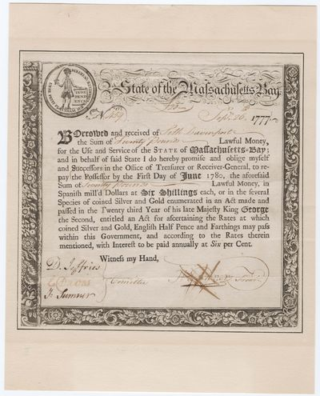
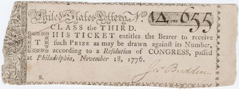
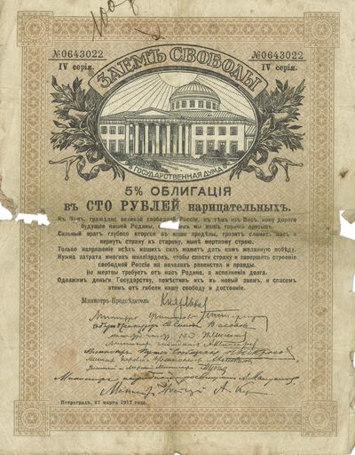
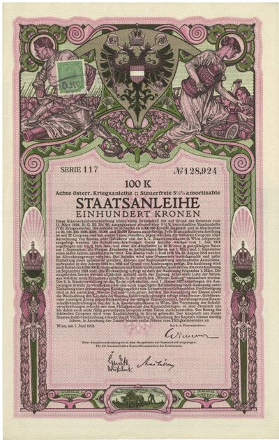
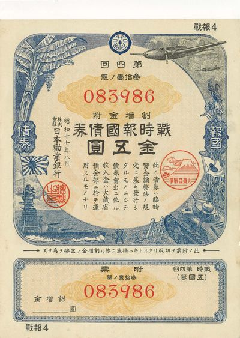

Seth Davenport and the Birth of American Public Credit
On February 26, 1777, the State of Massachusetts Bay issued this bond for £20 lawful money to Seth Davenport, promising repayment with 6% annual interest by June 1780. It is a mundane document on its face — a government borrowing a modest sum from a private citizen — but it represents something historically consequential: the birth of American public credit.
The Continental Congress and individual states had no central bank, no established tax system, and no credit history when the Revolution began. To fund Washington’s armies, they improvised. Massachusetts and other states issued bonds to merchants, farmers, and soldiers who supplied or served the cause. Interest was paid to induce lending. The promise to repay was backed not by gold but by the expectation that the Revolution would succeed and the new governments would honor their debts. That Massachusetts did honor these obligations — and that the Constitution of 1787 required the new federal government to assume the states’ war debts — laid the foundation for American creditworthiness in the centuries that followed.

The Continental Lottery: Financing Revolution by Chance
Before income taxes, before central banks, the Continental Congress funded the Revolution in part through lotteries. Authorized by congressional resolution in Philadelphia on November 18, 1776, the United States Lottery offered citizens the chance to win prizes while contributing to the war effort. This ticket — Class the Third, No. 1A.m.655 — was one of thousands printed as the Revolutionary War entered its most precarious year.
The lottery was an ingenious solution to the problem of extracting resources from a population deeply resistant to taxation. It transformed a fiscal obligation into a voluntary wager, combining patriotism with the possibility of gain. Similar techniques had been used by European governments for centuries — England’s first government lottery dated to 1612 — but the American version carried a new ideological charge: participation was framed as a civic act, a sign of belief in the republican experiment. The lottery would not be the last time a government at war turned necessity into narrative.

King Cotton’s Promise: The Confederate Loan That Failed
The Confederate States of America entered the Civil War without an established credit history, a central bank, or easy access to European capital markets. To finance its rebellion, the Confederate Treasury improvised. The Cotton Loan of 1863, authorized by Act of Congress on April 30 of that year, attempted a novel solution: bonds backed not by the full faith and credit of the Confederate government but by the Confederacy’s most tangible asset — cotton. Bondholders could redeem their $1,000 at face value or, if they chose, take cotton at below-market rates at designated ports.
The scheme attracted European investors, particularly in France and England, who saw it as a way to secure access to Southern cotton while the Union blockade tightened. But the blockade ultimately proved fatal to the plan: as Confederate ports fell and cotton stocks became inaccessible, the bonds’ cotton guarantee was worth nothing. Confederate Secretary of the Treasury C.G. Memminger, whose signature appears on this certificate, resigned in 1864 as Confederate finances collapsed. The $1,000 promise printed on this bond became worthless in April 1865.

The Liberty Loan That Liberty Could Not Save
In March 1917, days after the February Revolution that toppled Tsar Nicholas II, Russia’s new Provisional Government issued a “Liberty Loan” (Zaym Svobody) — 5% bearer bonds to fund the continued prosecution of World War I. The name was deliberate: where the Tsar had borrowed to defend autocracy, the republic would borrow in the name of freedom. The bond bears the imagery of the new Russia: an eagle without the Romanov crown, and text in the name of the people rather than the sovereign.
The Liberty Loan was the Provisional Government’s attempt to demonstrate that democratic Russia could honor its financial obligations, maintain the confidence of Allied creditors, and prosecute the war to victory. All three bets failed. The Bolsheviks seized power in October 1917. In February 1918, the new Soviet government repudiated all Tsarist and Provisional Government debts, declaring them instruments of capitalist exploitation. Allied bondholders were not compensated for decades. This 100-ruble bond, IV Series, No. 0643022, issued in Petrograd on March 27, 1917, is a document of the eight months between the fall of autocracy and the rise of Communism — a promise made in revolutionary optimism and canceled by revolutionary necessity.

The Eighth Loan: War Finance at the End of an Empire
Austria-Hungary issued eight successive war loans between 1914 and 1918, each one marketed with patriotic posters, civic ceremonies, and appeals to the loyalty of the empire’s diverse subjects. Citizens were asked to lend their savings to the state; in return they received tax-free 5½% bonds, redeemable over decades. Each successive loan was oversubscribed in the early years — a sign of popular confidence in a short war. By 1917 and 1918, subscriptions were maintained only by coercion and bank credit.
This bond is from the Eighth Austrian War Loan — 100 kronen, Serie 117, No. 128,924, Vienna, June 1, 1918. Its Art Nouveau decorative borders and imperial typography are the aesthetic language of a dying empire. The armistice came in November 1918. The Habsburg Empire dissolved into successor states — Austria, Hungary, Czechoslovakia, Yugoslavia. The Austrian kronen collapsed in the inflation of the early 1920s. Holders of these bonds received almost nothing. The eight war loans had financed four years of industrial slaughter at the cost of the empire that issued them.

Patriotic Bonds and the Mass Mobilization of Savings
World War II transformed war finance into a mass phenomenon. Governments across the belligerent nations — the United States with its Liberty Bonds, Britain with its War Savings Certificates, Germany with its Reichsanleihen — mobilized civilian savings on an unprecedented scale. Japan’s contribution to this tradition was the “Wartime Patriotic Bond” (戦時報国債券, Senji Hōkoku Saiken): small-denomination instruments of 5 and 10 yen, deliberately designed so that ordinary workers, schoolchildren, and households could purchase them as acts of patriotic duty.
This bond — 4th issue (第4回), No. 083986, 5 yen, August 1942 (Shōwa 17) — was sold at the height of Japan’s Pacific conquests, when the empire stretched from Manchuria to the Dutch East Indies. The bond’s modest face value was the point: war finance was not a transaction for wealthy investors but an obligation of every citizen. Within three years of this bond’s issue, Japan surrendered. The yen collapsed in the postwar inflation, and these small bonds, like so many of the instruments in this exhibit, repaid their holders with little more than the experience of having lent to a state at war.